Overview
The Dynamic Response System (DRS) performs different functions such as displaying the current state of the DRS variables, all available dialog lines and a history of the previously sent signals.
As seen on the reference image below, its window is comprised of four tabs namely Variables, Responses, Dialog Line History and Dialog Line Database.
You can access the DRS tool via Tools → Dynamic Response System.
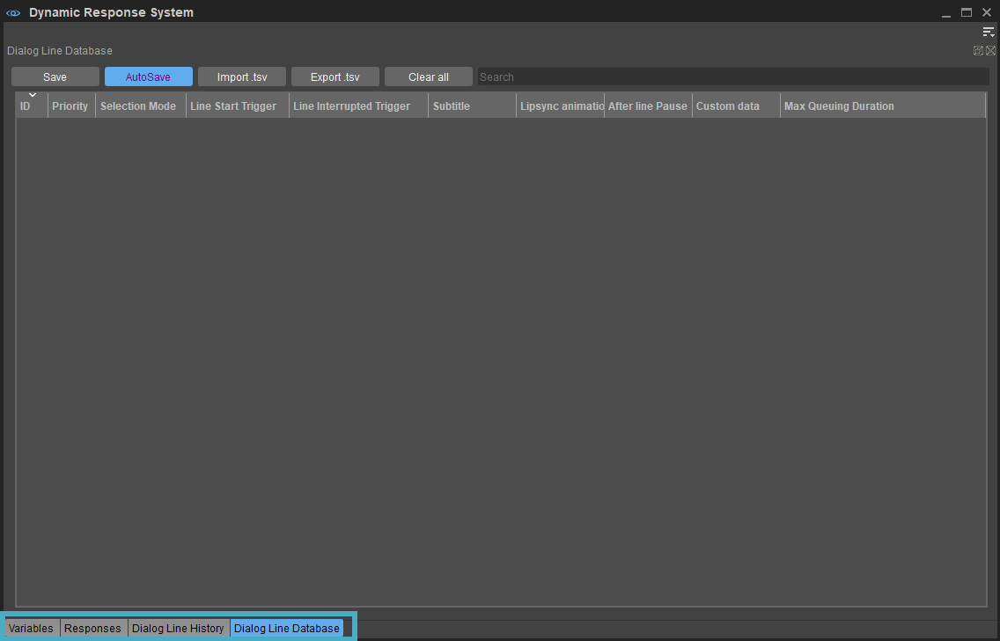
Menu
The Menu can be accessed via the 
Variables
You can use the Variables tab to view the variables that are specified in a signal. A variable can be a name or a value that describes the state of the game. It can be created or updated by the game logic and by the DRS. These variables then can be used in conditions to find the best fitting dialog to an event. 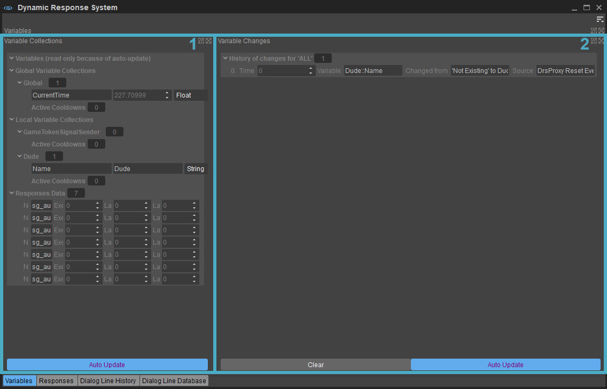
The Variables Tab is comprised of two different panels namely Variable Collections and Variable Changes:
1. Variable Collections
Displays a group of related variables.
You can distinguish between three different types of collections:
| Option | Description |
|---|---|
| Context variables | These collections are passed along with a signal; for example, a damage-received signal can have a context variable collection with variables like AmountOfDamage, DamageSource and HitZone. These collections only exist while the signal is being processed. |
| Local Variable | These collections are linked to an actor, so every actor might have a local variable Name, Health or CurrentWeapon. Local variable collections exist as long as the actor exists. The name of a local collection is always the same name as the actor. |
| Global variable | These collections exist for the whole game. They contain global information, for example, Quest4Solved, NumChildrenRescued or CurrentMapName. |
There is one special collection called Responses Data at the bottom of the collections overview which shows the Execution Counter and the execution timestamps for each response that was started so far. These values are used internally for the Execution Limit and the Time Since Response condition. But this information might also be useful to you to check to see how often a response was already executed.
2. Variable Changes
This panel lists the history of changes that were made to the DRS variables. If the list is empty, you can use the Auto Update button to update the history. You can also use the Clear button to remove the entire history.
Responses
This section lets you modify a response signal.
A response can contain several conditions and actions; based on the conditions and/or actions that have been previously executed. 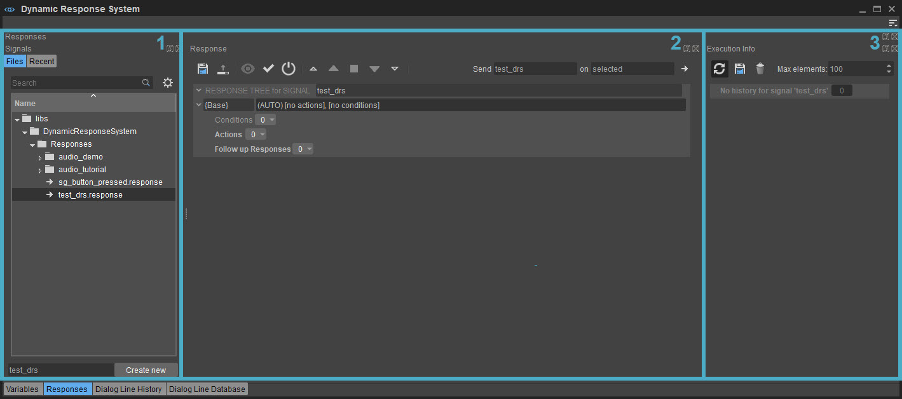
Responses Tab
1. Signals
The Files tab of the Signals panel lists all responses that can be linked to a DRS signal. These responses are stored as .response files within the libs\DynamicResponsesystem\Responses folder, which can be found in the project's asset directory.
A new response can be created by entering the name of the response in the Enter new response... field and clicking the Create New button next to the newly created response name. 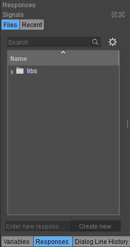
The Recent tab provides an overview of all signals that have been sent from the current level, along with a count of the number of times each signal was sent.
The main elements of the Recent tab are as follows: 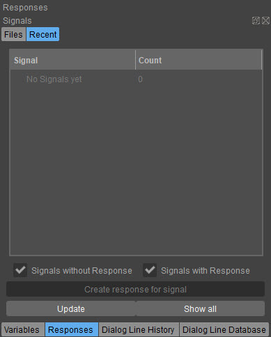
Option | Description |
|---|---|
Signals without Response/ Signals with Response | Filters the signals listed within the Recent tab of the Signals panel, on the basis of whether they have responses associated with them or not. |
Create response for signal | Creates a new response for the selected signal. |
Update | Updates list of signals and their counts under the Recent tab, since the list is not updated automatically. |
Show all | Updates the Execution info tab that is on the right side of the Responses panel by default, to display the history for all sent signals so far. |
Normally, a signal that is executed in the Engine's game mode (Ctrl + G) by pressing the input key associated with it via Flow Graph. However, you can also execute the signal directly without being in the game mode by using the Send Signal on Actor button on the top right corner of the Response panel, which is described in the following tab. You can specify the exact signal to execute and the desired actor on which the signal should be executed.
2. Response
With a signal selected under the Signals panel, the Response panels allows users to specify a response for the selected signal. Additionally, conditions that need to be checked after each signal, actions that need to be performed based on these conditions; additional follow up responses can also be specified.
Indicated below are the buttons, fields and options that can be found on the Response panel. 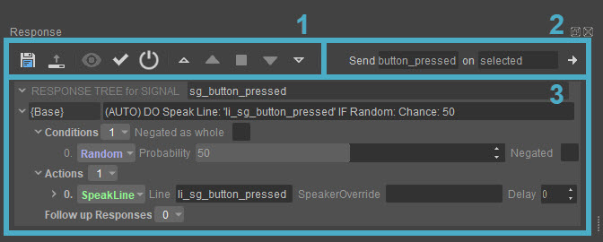
1. Toolbar
Option | Keyboard Shortcut | Description |
|---|---|---|
Save current response | Ctrl+S | Saves the current response to disk. |
Reload from File | Ctrl+L | Reverts all changes, and reloads the response from file. |
Show Actions and Conditions | Ctrl+H | Toggles the view to display/not to display conditions and actions. Useful for very large responses to get a quick overview. |
Evaluate Condition | Ctrl+E | Displays an indicator in front of each condition for the current state of the game. |
Collapse all | Ctrl+1 | Collapses all the conditions, actions and follow-up responses. |
Collapse one level | Ctrl+2 | Collapses one level of conditions, actions and follow-up responses. |
Collapse to default depth | Ctrl+3 | Displays the actions and conditions of the base responses and the follow-up responses. |
Expand one level | Ctrl+4 | Expands one level of conditions, actions and follow-up responses. |
Expand all | Ctrl+5 | Expands all the conditions, actions and follow-up responses. |
Reset DRS | Resets all variables and execution-counter, will also stop all running responses. |
2. Send Signal
Option | Description |
|---|---|
Send | Specifies the signal that will be executed on a player. |
On | Specifies the player on which the signal will be executed. |
Send Signal on Actor (Ctrl+B) | The signal specified in the Send field to the left of this button will be send to the actor with the name specified in the On field. |
3. Response Tree for Signal
Displays the entire response tree assigned to a signal. The features that can be used to create a response based on the expected outcome are categorized in three different sections namely:
- Conditions
- Actions
- Follow up Responses
More information about these options can be found on Response Tree Features.
Execution Info
With a signal selected under the Signals panel, the Execution Info panel displays the history of the selected signal. 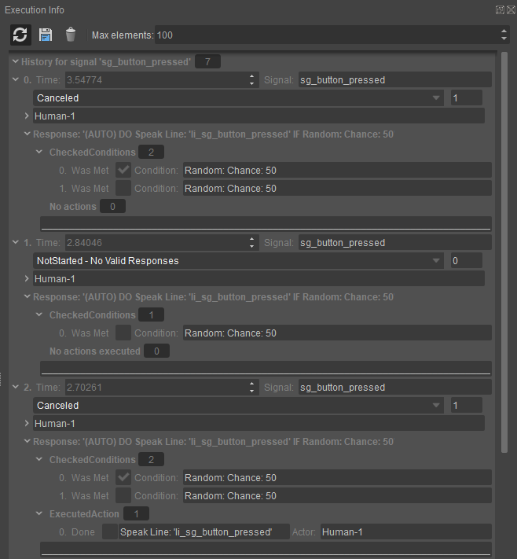
The above image shows the Execution Info of a typical signal for which a Condition, an Action and a Follow up Response has been specified.
The man function of the fields and the options that are present on this panel are as follows:
Field | Description |
|---|---|
Auto Update | If checked, updates the list with the latest events from the game. |
Save current log to JSON | Saves the current history to [PROJECT]\Libs\DynamicResponseSystem\DebugData\recentresponses.json. Please make sure that the directory has already been created before taking this action. |
Clear History | Clears the entire signal history. |
Max elements | Specifies maximum how many elements should be displayed. Also removes the older entries first. Set the value to 1 to show only the latest entries. |
History for signal | Shows for which signal(s) the history is currently displayed. Normally, it's the signal selected on the left side of the widget is displayed in the recent signals view or the response-files view. |
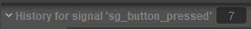 | Indicates the signal for which the listed history corresponds to, along with a count of the times the signal has been executed so far. |
Time | Specifies when the response tree for the listed signal was started. |
Signal | Names the signal for which the listed history corresponds to. |
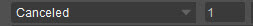 | Specifies if the signal is still running, finished, or if no response was made. The number situated next to it indicates the responses that have been executed during the processing of the signal. |
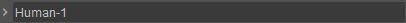 | Specifies the actor that received the signal. |
Response | Specifies the response that was executed, while the ConditionsMet checkbox indicates if all conditions for that particular response were met. Listed below this field are each of the conditions that were checked and the actions that were performed in response to the signal. |
FOLLOW UP RESPONSE | This menu is available when a Follow up Response is introduced to the RESPONSE TREE. It lists all follow up responses executed after the base response of the signal, along with the conditions that were checked and the actions that were performed as part of the follow up response. |
The Responses tab is essential for debugging issues wherein responses associated to signals do not work in the way they are supposed to.
Dialog Line History
The Dialog Line History lets you view the signals that have been processed through the DRS. You can use this information to debug a response signal when it fails to appear in game mode. 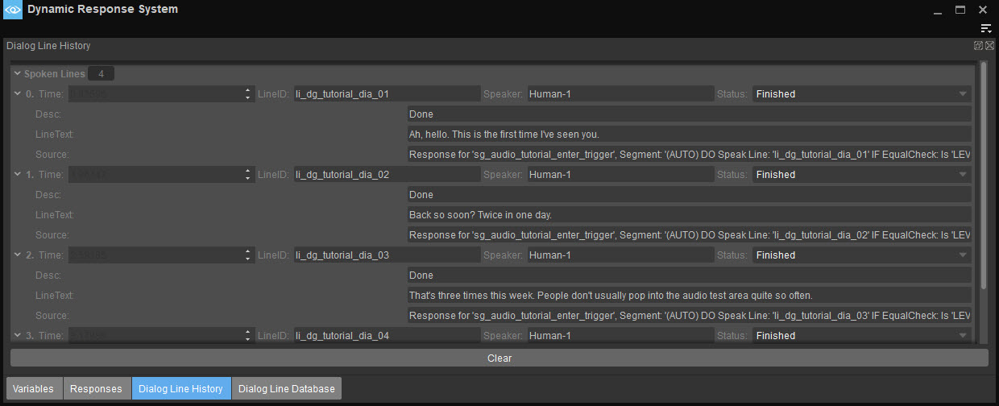
The following options are displayed when the Dialog Line History tab is selected:
Option | Description |
|---|---|
Time | Displays the time when the line was spoken. The current DRS time can be checked under the Variables tab. |
LineID | Displays the ID of the line that was spoken. |
Speaker | Specifies the speaker who spoke the line. |
Status | Displays the status of the line. For example, is the line still running, has it ended, or could it not be started because the actor was already speaking? |
Desc | Displays detailed information about the current status. |
LineText | Displays the subtitles associated with the line. |
Source | Displays a system (if available) which enabled this line to be spoken such as the Flow Graph, a code or another response. |
Clear (Button) | Clears the current history. |
Dialog Line Database
The Dialog Line Database contains lines of dialog, i.e, conversations, and related information that can be assigned to an actor in the game mode.
In order to add a new line to the database, you need to select the Dialog Line Database tab in the Dynamic Response System tool.
The database holds all information related to a dialog line such as subtitles, audio assets, and animations. This is especially helpful to group the actual data together, instead of splitting it into several actions.
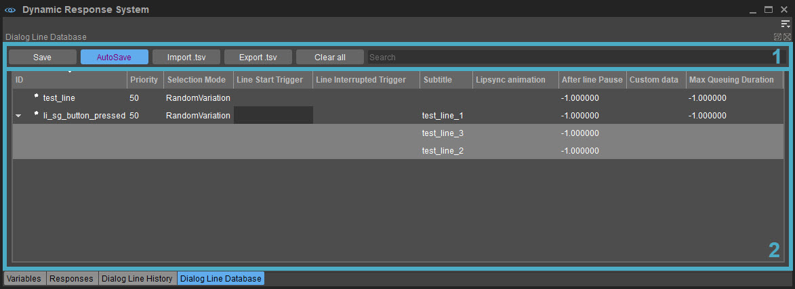
Dialog Line Editor
The Dialog Line Editor has several buttons and a Search bar at the top.
Button | Description |
|---|---|
Save | Saves the contents of the Dialog Line Database manually. |
AutoSave | Saves to disk whenever you edit any field in the Dialog Line Database. |
Import .tsv | Imports a .tsv file. |
Export .tsv | Exports the contents of the Dialog Line Database as a .tsv file which can then be opened and edited in other programs such as Excel. |
Clear all | Deletes all IDs from the Dialog Line Database. Can be used in combination with Import .tsv, for instance when you want to clear your current data and replace it with the data from the .tsv file you want to import. If AutoSave is on, then this will wipe the entire Dialog Line Database clean, meaning the lines can't be restored. |
Search | This Search bar lets you search by ID name in the Dialog Line Database. |
Dialog Line Columns
The columns below these buttons and the search bar provide the following information in relation to a dialog line listed within the Dialog Line Database.
Option | Description |
|---|---|
ID | Specifies the ID of the dialog line which is used to reference the line from within the responses. |
Priority | Specifies the priority of the line. The lines with more importance will cancel the existing lines when started via a SpeakLine action. The lines with less importance will just be skipped. The behavior of lines with the same priority can be configured with the CVar drs_dialogsSamePriorityCancels; the default value is 1. |
Selection Mode | Only used when the line contains several variations. Defines when a random variation should be picked, or specifies a fixed order in which the variations should be picked. |
Line Start Trigger | Starts an audio trigger when the specified line is started. |
Line Interrupted Trigger | Starts an audio trigger when the line is interrupted, for instance by a more important line or through a cancel action. If no interruption trigger is specified, a hard cut will be executed by default. |
Subtitle | Displays the subtitle while the line is being spoken. |
Lipsync animation | Enables the animation to be played when the line is started. Looping animations will be stopped and when the line is executed, for instance the audio asset has been executed or the timeout has been reached, non-looping animations will be played to the end and therefore will delay the next line. The fade in/fade out time can be configured with the CVar drs_dialogsLipsyncTransitionTime; the default value is 0.25. The talk-animation layer can be configured with the CVar drs_dialogsLipsyncAnimationLayer; the default value is 11. |
Standalone file | Specifies the name of a standalone .mp3 file that should be started when the line is spoken. The path is relative to current project folder/localization/current language. |
| After line Pause | The length of the additional pause after the line has been finished (in seconds). |
| Custom Data | Additional game specific data associated with the line. |
| Max Queuing Duration | Max time in seconds that this line can be queued if another, potentially more important line is currently playing. After this time, the line will be skipped. |
A single line can have multiple variations, which means even if you execute the same SpeakLine action twice, the actual line that is spoken can be different. This is a faster way to add a slight variation to a line. For example, you can simply add three variations by right-clicking the line and selecting Add Line Variation. Note that the first variation is already stored in the within line, so you need to add two more if the desired line count is three.
There are different properties that you can define for each line, for example you can add the text to be displayed in the game under the column Subtitle. For more information, please refer to Add a Dialog Line to the Dialog Line Database.
There is one more interesting option in the menu which is called Run Script; 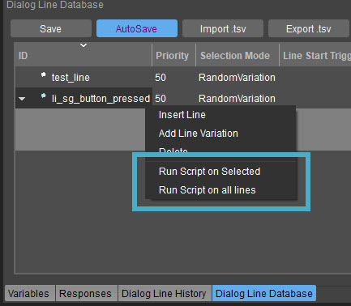
This will execute a batch file on each selected dialog line. This can for example be used to automatically generate text-to-speech placeholders for all of your dialog lines. The batch file must be located in your game folder and must be called linescript.bat.
Here is a simple example of how such a text-to-speech generation script file could look like (using the free tool eSpeak, which needs to be installed):
:: These are the variables you can use in the batch file:
:: LINE_ID (the ID of the lineSet)
:: SUBTITLE (the subtitle text of the current line)
:: AUDIO_TRIGGER (the audio trigger name of the current line)
:: AUDIO_TRIGGER_CLEANED (also the audio trigger name, but with removed prefix, e.g. "PlayTrigger_Test_1" will become: "Test_1". "My_Play_Trigger_Test" will become "Play_Trigger_Test")
:: ANIMATION_NAME (the animation name linked to this line)
:: STANDALONE_FILE (the name of the standalone file linked to this line)
:: Adjust this path to point the folder that contains the espeak executable
cd /d d:\MyEspeakFolder
espeak -vmb-us1 -w "%LINE_ID%.wav" "%SUBTITLE%"This example script passes the text stored in the SUBTITLE variable to the command line version of the eSpeak tool, which writes the generated wave file to a file named LINE_ID + .wav.